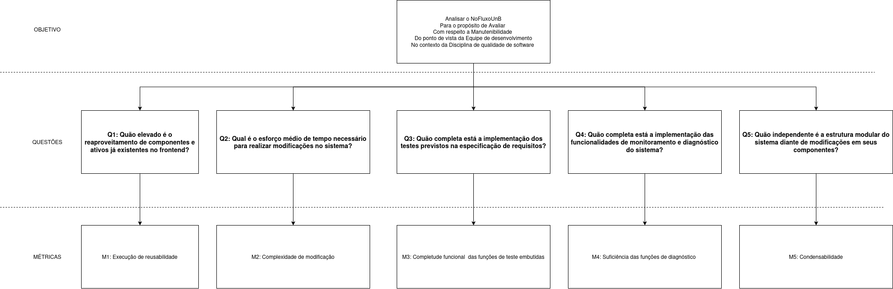

Manutenibilidade¶
Objetivo¶
| Dimensão | Descrição |
|---|---|
| Analisar | O NoFluxoUnB |
| Para o propósito de | Avaliar |
| Com respeito a | Manutenibilidade |
| Do ponto de vista de | Equipe de desenvolvimento |
| No contexto da | Disciplina de Qualidade de Software |
Questões, Hipóteses e Métricas¶
Q1: Quão elevado é o reaproveitamento de componentes e ativos já existentes no frontend?¶
H1: Espera-se que o NoFluxoUnB apresente um alto grau de reaproveitamento dos componentes do frontend.¶
Métrica 1: Execução de reusabilidade¶
Fórmula: $$ \frac{\text{Componentes Reutilizados}}{\text{Total de Componentes Levantados}} \times 100 $$
O levantamento considera os componentes em src/lib/components. Componentes Svelte independentes são contados por arquivo, e cada família de UI é agrupada pelo módulo público index.ts.
Critérios:
-
Desejável (H1 Confirmada): ≥ 80%
-
Aceitável: Entre 50% e 79%
-
Inaceitável (H1 Refutada): < 50%
Q2: Qual é o esforço médio de tempo necessário para realizar modificações no sistema?¶
H2: Espera-se que as modificações implementadas no NoFluxoUnB sejam concluídas, em média, em até 4 dias.¶
Métrica 2: Complexidade de modificação¶
Fórmula: $$ \frac{\text{Tempo Total de Resolução das Modificações Implementadas}}{\text{Número de Modificações Implementadas}} $$
O tempo de resolução corresponde ao valor, em dias, registrado para cada issue implementada da amostra. Issues encerradas sem implementação não integram o numerador nem o denominador.
Critérios:
-
Desejável (H2 Confirmada): ≤ 4 dias por modificação
-
Aceitável: Acima de 4 e até 8 dias por modificação
-
Inaceitável (H2 Refutada): > 8 dias por modificação
Q3: Quão completa está a implementação dos testes previstos na especificação de requisitos?¶
H3: Espera-se que a equipe tenha implementado 100% dos cenários de teste definidos na especificação dos requisitos da aplicação.¶
Métrica 3: Completude funcional das funções de teste embutidas¶
Fórmula: $$ \frac{\text{Testes Implementados}}{\text{Testes Requeridos na Especificação}} \times 100 $$
Critérios:
-
Desejável (H3 Confirmada): 100%
-
Aceitável: Entre 80% e 99%
-
Inaceitável (H3 Refutada): < 80%
Q4: Quão completa está a implementação das funcionalidades de monitoramento e diagnóstico do sistema?¶
H4: Espera-se que o NoFluxoUnB implemente integralmente as funcionalidades de diagnóstico, rastreamento de erros e monitoramento previstas no projeto.¶
Métrica 4: Suficiência das funções de diagnóstico¶
Fórmula: $$ \frac{\text{Funções de Diagnóstico Implementadas}}{\text{Funções Exigidas na Especificação}} \times 100 $$
Critérios:
-
Desejável (H4 Confirmada): 100%
-
Aceitável: Entre 80% e 99%
-
Inaceitável (H4 Refutada): < 80%
Q5: Quão independente é a estrutura modular do sistema diante de modificações em seus componentes?¶
H5: Espera-se que ao menos 80% dos componentes avaliados não importem outros componentes internos.¶
Métrica 5: Condensabilidade¶
Fórmula: $$ \frac{\text{Componentes sem Dependências Internas}}{\text{Total de Componentes Avaliados}} \times 100 $$
Critérios:
-
Desejável (H5 Confirmada): ≥ 80%
-
Aceitável: Entre 50% e 79%
-
Inaceitável (H5 Refutada): < 50%
Modelo GQM¶

Referências Bibliográficas¶
ISO/IEC 25010:2023. Características e subcaracterísticas de qualidade de software. Disponível em: https://www.iso.org/standard/82998.html. Acesso em: 4 de junho de 2026.
SOARES RAMOS, Cristiane. Processo de Avaliação de Qualidade de Software. Brasília: UnB, 2026. Material de aula (slides). Acesso em: 12/05/2026
UNB-MDS. 2025-1-NoFluxoUNB. [S. l.], 2025. Disponível em: https://github.com/unb-mds/2025-1-NoFluxoUNB. Acesso em: 12/05/2026.
ISO; IEC. Systems and software engineering – Systems and software Quality Requirements and Evaluation (SQuaRE) – Measurement of system and software product quality. ISO/IEC WD 25023. Working Draft, Geneva: International Organization for Standardization; International Electrotechnical Commission, 2011. 29 p. Acesso em: 12/05/2026.
Histórico de Versões¶
| Versão | Data | Descrição | Autor(es) | Revisor(es) | Data de Revisão | Alterações Realizadas |
|---|---|---|---|---|---|---|
| 1.0 | 04/06/2026 | Criação da documentação inicial e estruturação | Vilmar José Fagundes | |||
| 1.1 | 04/06/2026 | Escrita de todo o documento | Isaque Camargos Nascimento | |||
| 1.5 | 17/06/2026 | Alterações apontadas no ponto de controle 2 | Isaque Camargos Nascimento |